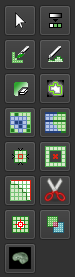
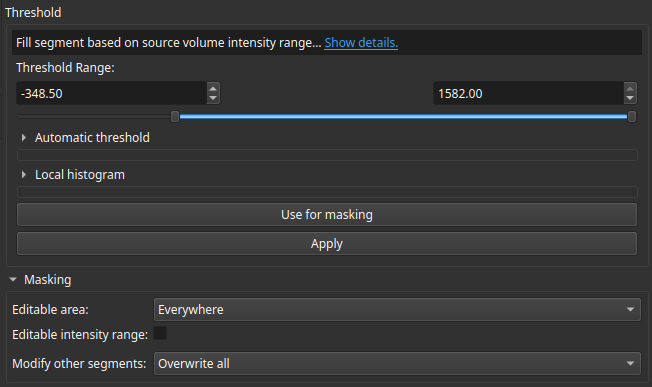
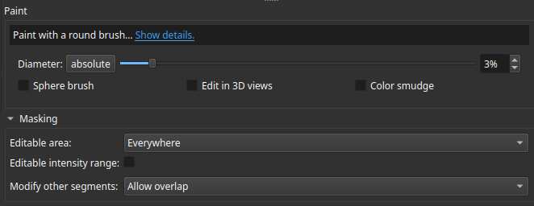

Contouring
Manual Contouring
Manual contouring can be performed from the Segment Editor module . The following steps describe the standard workflow for adding manual contours:
- In the
Segmentationdrop-down menu, select the structure set you wish to add your contour to. - In the
Source volumemenu, select the corresponding volume. - Click the green
Addbutton to add a new segment. Double-click this segment and rename it to the appropriate structure. -
Ensure the newly added segment is highlighted in the list, then select your desired contouring tool (illustrated below).

Depending on the structure you are contouring, choose one of the following tools:
Threshold Tool
This tool is best suited for contouring structures with clear, distinct borders.

In the threshold menu, define the Threshold Range. The segment will automatically highlight any part of the volume that falls within this CT number range. Adjust the range until it accurately encloses the boundaries, then click Apply.
Important: Before applying, check the Masking section and ensure that Modify other segments is set to Allow overlap.
Paint Tool
This tool is ideal for making small adjustments or manually drawing structures by hand. You can change the brush size by adjusting the Diameter. To modify multiple slices simultaneously, select the Sphere brush option, or use the Edit in 3D views option to paint directly in the 3D viewing panel. Once finished, click Apply.
Important: Before applying, check the Masking section and ensure that Modify other segments is set to Allow overlap.

Erase Tool
This tool behaves identically to the Paint tool, but removes areas from the segment instead of adding them.
Automatic Contouring
Automatic contouring is currently available only in the RapidBrachyMCTPS 3D Slicer module and is not yet supported in the standalone application.. 3D Slicer has several options for AI auto-contouring, such as MONAIAuto3DSeg, available in the official 3D Slicer app.